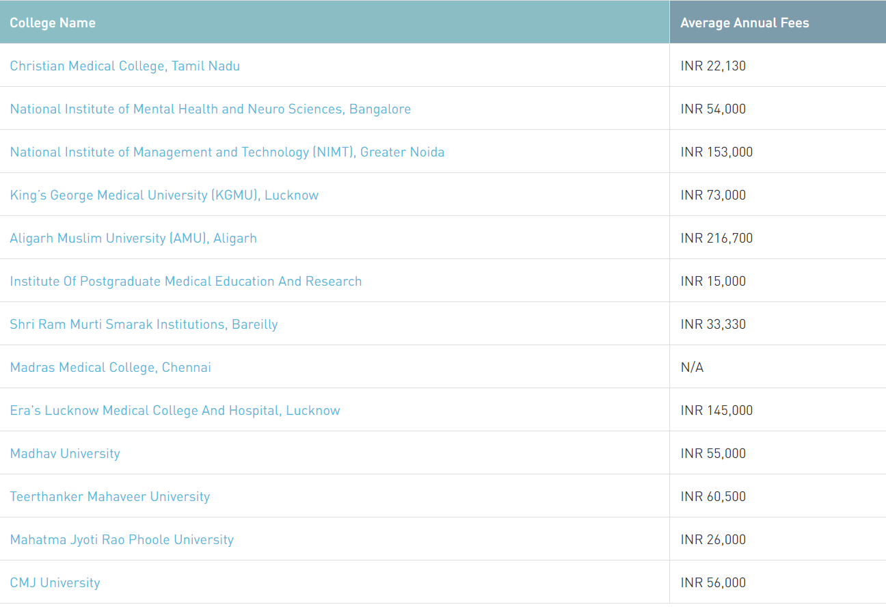

The goal to attain a Diploma in Physiotherapy degree will depend on each individual’s aspirations and goals. Some of the reasons to pursue this course are mentioned below: A severe shortage of qualified personnel: According to WHO’s mandate there must be at least 1 Physiotherapist per 10,000 people. According to reports there are only 5000 qualified physiotherapists in India. Thus, there is a deficiency of 95,000 professionals. This underlines the huge employment opportunity of the diploma in physiotherapy professionals. Part of a growing industry: The healthcare industry in India is expected to grow at a rate of 16-17% in India. The rapid growth in the healthcare and hospitality industry creates job opportunities for individuals. Also physiotherapists are required in various sports industries as rehab specialists for athletes
The eligibility criteria for a Diploma in Physiotherapy aspirants are not complicated and are as follows. It must be noted that the eligibility criteria will differ from one institute to another. To be eligible to pursue DPT course, candidates must have passed the 10+2 examination or its equivalent examination in Science stream from the recognized board of education. Candidates must have secured a minimum aggregate score of 45% or more in the qualifying exam in subjects such as Physics, Chemistry, Biology, and/or Mathematics. A few of the college's candidates also need to appear for the entrance exam.
Candidates who wish to become physiotherapists should take up this course. The course is ideal for candidates who have a lesser amount of time to pursue the BPT or Bachelor of Physiotherapy Course. Instead they can pursue this course in a smaller time frame to have the similar result. The course is ideal for candidates who wish to become a part of the hospital or health care industry. The course is ideal for candidates who want to work as a sports rehab specialist. Candidates who wish to change their career trajectory and enter the healthcare industry can also pursue this course as the minimum qualification is class 12th.